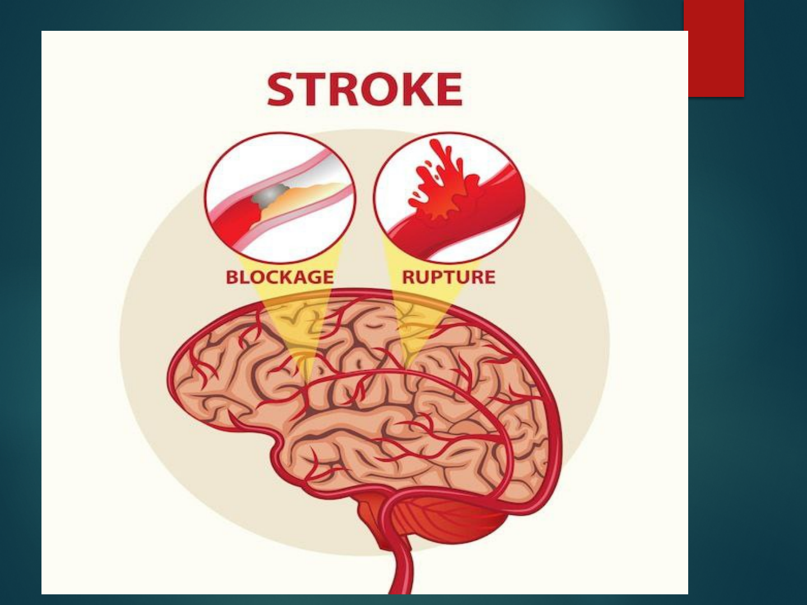

CEREBRO
VASCULAR
ACCIDENT
BY SASWATIKA PANDA
MSC 1
ST
YEAR
INTRODUCTION

DEFINITION-
A stroke occurs when the blood supply to
part of your brain is interrupted or reduced,
depriving brain tissue of oxygen and nutrients.
Within minutes, brain cells begin to die


INCIDENCE RATE-
Stroke is one of the leading causes of death
and disability in India. The estimated adjusted
prevalence rate of stroke range, 84-262/100,000
in rural and 334-424/100,000 in urban areas.
Stroke is still the third leading cause of death.

RISK FACTOR-
Non modifiable risk factors :
Age : more than 65 yr
Gender : More in men than women
Race : African American
Family history : Hereditary

CONT-
Modifiable risk factors:
Hypertension
Heartdisease
Smoking
Excessive alcohol consumption
Obesity
Sleep apnea
Metabolic syndrome
Poor diet

CONT-
Drug abuse
Oral contraceptive
Ventricular aneurysm
Arterial or ventricular clot
Arterial septal defect
Intracranial artery thrombus (esp. African-
Americans)
Aortic arch atherosclerotic Plaque
Transient hypotension with Carotid Stenosis

ETIOLGY
Vessel wall embolus
Carotid artery most often the source
relatedtothrombusformationdistaltostenosis
Cardiac source
Mitral valve stenosis
Mitral valve prolapsed
Calcified mitral annulus

TYPES OF STROKE-
Strokes are classified as ischemic and
hemorrhagic based on the underlying path
physiologic findings.
1. ISCHEMIC STROKE
2. HEMORRAGIC STROKE

ISCHEMIC STROKE

An ischemic stroke results from inadequate
blood flow to the brain from partial or
complete occlusion of an artery. These
account for approximately 80% of all
strokes.
Ischemic stroke are further divided into
thrombotic and embolic.

TYPES-
1. THROMBOTIC STROKE
A thrombotic stroke occurs from injury to a
blood vessels wall and formation of a blood
clot.
The lumen of the blood vessel becomes
narrowed and if it becomes occluded,
infarction occurs.

CONT-
Thrombosis develops readily where
atherosclerotic plaques have already narrowed
blood vessels.
Thrombotic stroke, which is the result of
thrombosis or narrowed blood vessel, is the
most common cause of stroke.
Two third of thrombotic strokes are associated
with hypertension or diabetes mellitus.

CONT-
2. EMBOLIC STROKE
Another type of stroke may occur when a blood
clot or a piece of atherosclerotic plaque
(cholesterol and calcium deposits on the wall of
the inside of the heart or artery) breaks loose,
travels through the bloodstream and lodges in an
artery in the brain. When blood flow stops, brain
cells do not receive the oxygen and glucose they
require functioning and a stroke occurs. This type
of stroke is referred to as an embolic stroke.
PATHOPHYSIOLOGY-
Ischemia
Energy Failure
Acidosis Ion Imbalance
Intracellular Calcium Depolarization
Increased Increase
Glutamate
CONT-
Cell Membrane And Protein Breakdown Formation Of
The Free Radicals
Protein Production Is Decreased
Cell Injury And Death

CLINICAL
MANIFESTATION-
Unaware of persons or objects on side of
visual loss
Neglect of one side of the body
Difficulty judging distances
Difficulty seeing at night
Unaware of objects or the borders of objects
Double vision
Motor Deficits

CONT-
Hemi paresis - Weakness of the face, arm, and
leg none the same side (due to a lesion in the
opposite hemisphere)
Hemiplegia - Paralysis of the face, arm, and
leg on the same side (due to a lesion in the
opposite hemisphere)
Ataxia - Defective muscular co-ordination,
unsteady gait Unable to keep feet together;
needs a broad base to stand
Dysarthria - Difficulty in forming words
Sensory Deficits

CONT-
Paresthesia (occurs on the side opposite
the lesion) - Numbness and tingling of
Extremity Verbal Deficits
Expressive aphasia
Unable to form words that are
understandable; may be able to speak in
single-word responses
Receptiveaphasia–wordsthatmakeno
sense

CONT-
Unable to comprehend the spoken word;
can speak but may not make sense
Global (mixed) aphasia
Combination of both receptive and
expressive aphasia Cognitive Deficits
Short- and long-term memory loss
Decreased attention span
Impaired ability to concentrate

CONT-
Poor abstract reasoning
Altered judgment
Emotional Deficits
Loss of self-control
Decreased tolerance to stressful situations
Depression

DIAGNOSTIC EVALUATION-
CT, CTA (computer tomographic angiography)
MRI, MRA (magnetic resonance angiography)
SPECT (single photon emission computed
tomography)
PET (Positron emission tomography)
MRS (magnetic resonance spectroscopy)
XenonCT–forrevealsbloodflowtoregionof
blood
Electroencephalogram
Cerebral angiography

COMPLICATION
Paralysis or loss of muscle movement
Difficulty talking or swallowing
Memory loss or thinking difficulties.
Emotional problems
Changes in behavior and self-care ability

PREVENTION
Controlling high blood pressure (hypertension).
Lowering the amount of cholesterol and saturated
fat in diet quitting tobacco use
Controlling diabetes
Eating a diet rich in fruits and vegetables.
Exercising regularly
Drinking alcohol in moderation, if at all.
Treating obstructive sleep apnea
Avoiding illegal drugs.

MEDICAL MANAGEMENT
Patient with TIA or stoke have chances of
arterial fibrillation are treated with warfarin .
Drugs like Dabigatran (Paradaxa )or rivaroxaban
( Xarelto) like anti coagulant prescribed as
alternative therapy.
Platelet inhabiting medication like aspirin and
clopidogrel
After the acute stroke period antihypertensive
medication given .

CONT-
Thrombolytic therapy -
Ø Thrombolytic therapy are used to treat ischemic
stroke by dissolving the blood clot that is
blocking blood flow to the brain .
Ø The most commonly used drug for thrombolytic
therapyistissueplasminogenactivator(tPA),

Surgical management
CAROTID ENDARTERECTOMY-
CEA is the most frequently performed non cardiac
vascular procedure.
A CEA is the removal of atherosclerotic plaque
from the carotid artery.
CEA is most common among the patient with
TIAs

CONT-
CAROTID STENTING-
Ø With or without angioplasty is A less invasive
procedure used for selective patient.
Ø It is usually recommended for those with less
symptoms of TIAs
Ø Young patient had slightly better outcomes
with carotid stenting.

HEMORRHAGIC
STROKE

Hemorrhagic strokes account for 15% of
Cerebrovascular disorders and are primarily
caused by an intracranial or subarachnoid
hemorrhage
Hemorrhagic strokes are caused by bleeding
into the brain tissue, the ventricles, or the
subarachnoid space. Primary intracerebral
hemorrhage from a spontaneous rupture of
small vessels accounts for approximately
80% of hemorrhagic strokes and is primarily
caused by uncontrolled hypertension.

CONT-
INTRACEREBRAL HEMORRHAGE
An intracerebral hemorrhage, or bleeding into the
brain substance, is most common in patients with
hypertension and cerebral atherosclerosis because
degenerative changes from these diseases cause
rupture of the vessel.

CONT-
INTRACRANIAL (CEREBRAL) ANEURYSM
An intracranial (cerebral) aneurysm is a dilation of
the walls of a cerebral artery that develops as a
result of weakness in the arterial wall.

CONT-
SUBARACHNOID HEMORRHAGE-
A subarachnoid hemorrhage (hemorrhage
into the subarachnoid space) may occur as a result
trauma, or hypertension
PATHOPHYSIOLOGY
Etiological factors
Presses on nearby cranial nerves or brain tissue
Causing subarachnoid hemorrhage
Increase in ICP resulting from the sudden entry of blood into
the subarachnoid space
Injures brain tissue; or by secondary ischemia of the brain
resulting from the reduced perfusion pressure

CLINICAL
MANIFESTATION-
Severe headache
Loss of consciousness
Rigidity of the back and neck(nuchal rigidity)
Pain inn spine due to meningeal irritation
Visual disturbance (visual loss,diplopia,ptosis)
Dizziness
Hemi paresis

DIAGNOSTIC EVALUATION
CT scan: To determine the size and location of the
hematoma as well as presence or absence of
ventricular blood.
Cerebral angiography: To confirm the diagnosis of
an aneurysm or AVM.
Lumber puncture

PREVENTION
Control hypertension
Stop smoking.
Stop to take alcohol.
Avoid to take high cholesterol diet

SURGICAL MANAGEMENT-
Craniotomy:
A craniotomy is opening of skull surgically to
access to intracranial structures. It is perform
to evacuate a blood clot or control hemorrhage.

NURSING MANAGEMENT-
ASSESSMENT -
Assess the level of consciousness or responsiveness
as evidenced by movement, resistance to changes
of position, and response to stimulation; orientation
to time, place, and person
Presence or absence of voluntary or involuntary
movements of the extremities; muscle tone; body
posture; and position of the head
Stiffness or flaccidity of the neck
Eye opening, comparative size of pupils and
pupillary reactions to light, and ocular position

CONT-
Color of the face and extremities; temperature and
moisture of the skin
Quality and rates of pulse and respiration; arterial
blood gas values as indicated, body temperature,
and arterial pressure
Ability to speak
Volume of fluids ingested or administered; volume
of urine excreted each 24 hours
Presence of bleeding
Maintenance of blood pressure within the desired
parameters

DIAGNOSIS-
Pain related to increased intracranial pressure as
evidenced by decrease intra cranial tissue
perfusion.
Hyperthermia related to disease condition as
evidenced by raised body temperature.
Imbalanced nutrition less than body requirement
related to less intake of food as evidenced by
weight loss. .
Impaired verbal communication related to loss of
facial or oral muscle tone control as evidence by
Neuro muscular impairment

DIAGNOSIS 1-
Pain related to increased intracranial pressure as
evidenced by decrease intra cranial tissue
perfusion.

GOAL-
To maintaining cerebral tissue perfusion

INTERVENTION-
Assess the change in neurological status.
Check the capillary refill and conjunctiva for
paleness.
Elevate patient head to 30 degree as ordered.
Avoid neck flexion and knee extension

EVALUATION-
Patient’stissueperfusionisgraduallyimproved.

DIAGNOSIS 2-
Impaired verbal communication related to loss
of facial or oral muscle tone control as
evidence by Neuro muscular impairment
GOAL 2
To improve the method of communication

INTERVENTION 2
Provide alternative methods of communication
like pic,visual aids,
demonstration .
Talk directly to the patient and speaking slowly
to make sure patient understand
Speak in normal tones and avoid talking too fast.
Encourage family members and visitors to
persist efforts to communicate with the patient

EVALUATION 2-
After one hour of nursing intervention the patient
has able to establish method of communication

DIAGNOSIS 3
Hyperthermia related to disease condition as
evidenced by raised body temperature

GOAL 3
To decrease body temperature

INTERVENTION 3
Monitoring vital signs and body temperature regularly.
Administering antipyretic medications (e.g., acetaminophen)
to reduce fever.
Applying cooling measures (e.g., cool packs, cold sponging)
for hyperthermia.
Providing warming measures (e.g., blankets, warm packs) for
hypothermia.
Ensuring the patient is adequately hydrated.
Educating the patient and family about factors that can
influence body temperature, such as clothing and
environmental factors

EVALUATION-
The nurse assesses the patient's response to the
interventions for improve treatment.
The nurse monitors the patient's body temperature
for hyperthermia and hypothermia

DIAGNOSIS 4
Imbalanced nutrition less than body
requirement related to less intake of food as
evidenced by weight loss

GOAL-
To maintaining adequate nutritional intake

INTERVENTION-
Teach client to swallow shut lips and teeth
together then move the tongue back and
swallowing.
Instruct the client to chewing.
Provide flexible feeding schedule with small
feedings.
Monitor skin torpor ,weight,urine output.
Provide green leafy vegitables and low calories
diet.

EVALUATION-
Now after giving intervention patient nutritional
status is maintained.

SUMMARY

CONCLUSION
RESEARCH RELATED STUDY-
Abstract-
By Cleane Rosa Ribeiro da Silva, professor in
department of neurological surgery .
Published online 2023 Mar
23.doe:10.3389/fneur.2023.00282
PMCID:PMC643931
PMID:34852127
Objectives:toidentifyfactorsassociatedwith
specific health-related quality of life in
cerebrovascular accident, or stroke, survivors
.

CONT-
Methods:cross-sectionalstudy,carriedoutwith
160 cerebrovascular accident survivors. Data
were collected using the Barthel Index,
Cerebrovascular Accident Specific Quality of Life
Scale, and semi-structured instruments for
sociodemographic and clinical data, analyzed by
descriptive and inferential statistics.

CONT-
Results:health-relatedqualityoflifewas
associated with work activity , physical
activity , functional capacity , presence of
caregiver , motor alteration and
rehabilitation . The functionally dependent
people were 14.61 times more likely to present
low health-related quality of life, and those
with motor impairment were 3.07 times more
likely

CONT-
Conclusions:itwasevidencedthatfunctional
dependence and motor impairment increase
the chance of low health-related quality of
life in cerebrovascular accident survivors .

CONT-
METHODOLOGY-
Research approach: quantitative research
approach
Research setting: sukino ,Hydrabad
Population: adult age group 25-30years
Sample size: 100
Sample technique: non-probability convenient
sampling technique.

REFERENCES-
TORTORA. J.GERARD, ANATOMY AND PHYSIOLOGY (2015
EDITION), PP 79-81, INDIA , WILEY PUBLISHER.
GAUTTAM VIJYA KUMAR, PROCEDURE MANUUAL OF
MEDICAL SURGICAL NURSING, FIRST EDITION, PAGE NO
119-134, KUMAR PUBLISHING HOUSE.
KOUR SUKHPAL, CLINICAL NEUROSCIENCE AND
CRITICAL CARE NURSING, FIRST EDITION, PAGE NO 114-
122, JAYPEEBROTHERS MEDICAL PUBLISHER.
PREMA TP AND KF GRAICY, ESSENTIAL OF
NEUROLOGICAL AND NEUROSURGICAL NURSING,
SECOND EDITION, PAGE NO 715-730, JAYPEE BROTHERS
MEDICAL PUBLISHERS.
BECK R.ERIC, L.SOWHAMI ROBERT,
HANNAG.MICHAEEL,HOLDRIGHT R,DIANA,TUTORIALS
IN DIFFERENTIAL DIAGNOSIS, FOURTH EDITION,PAGE
NO 455-457,ELSEVIER PUBLICATION.